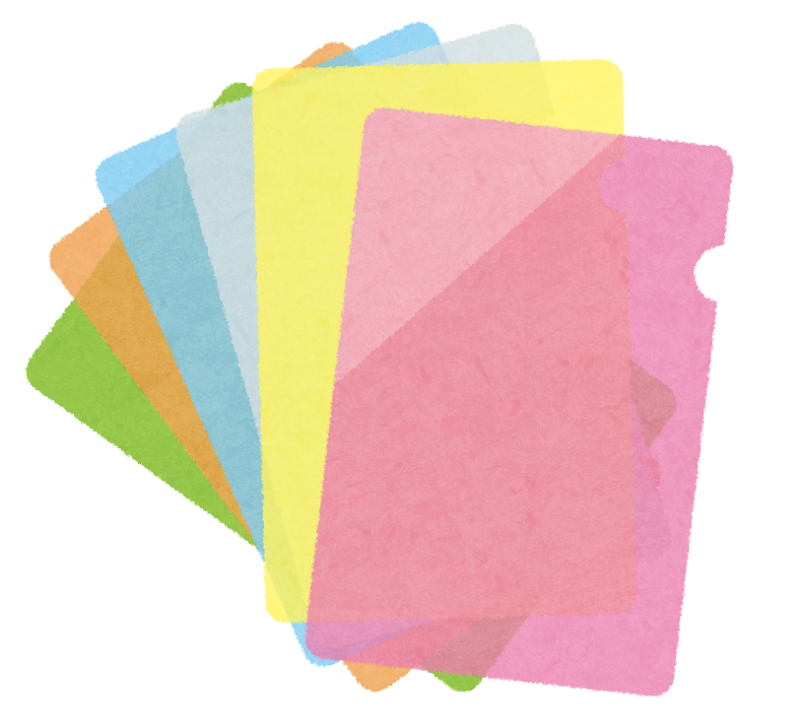
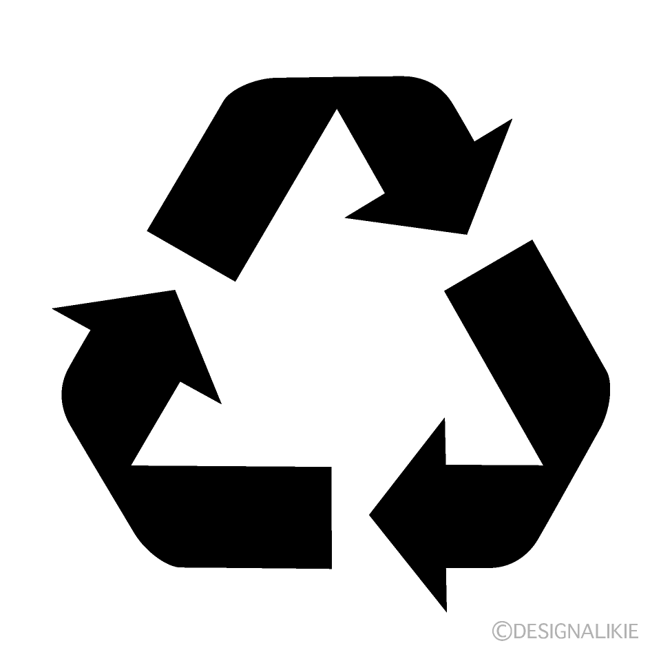
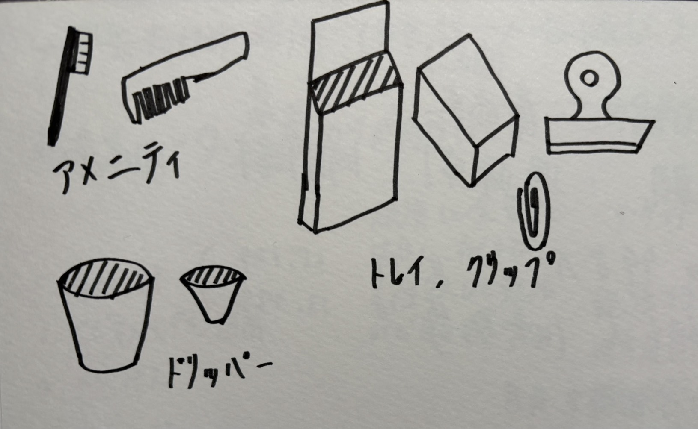

横浜市のサーキュラーエコノミー
今回は横浜市のサーキュラーエコノミーの取り組みについて、ゲストの方々からお話をいただいた。
今後に繋がる脱炭素とサーキュラーエコノミーについて横浜市が取り組んでいること、そしてその
現状について学んだ。
脱炭素先行地域
2022年に横浜市みなとみらい21地区が「脱炭素先行地域」として選定された。
脱炭素先行地域とは、2030年までに電力消費に伴うCO2排出の実質ゼロを実現する地域であり、
このみなとみらいの活動が他の地域のモデルケースとなっていく。
全体的には2050年までに脱炭素化を目指すため、モデルとなるみなとみらい地区の活動は重要になる。
横浜市の取り組み/ボトルtoボトル・SAF
みなとみらい地区は、オフィス・商業施設・企業本社・音楽ホールなどが集積する場所であるため、
人と物がとても多く集まる地域となっている。
脱炭素に向けた様々な取り組みが行われており、「ボトルtoボトル水平リサイクル」の取り組みは
大きな取り組みとなっている。
飲用後のペットボトルをボトル・ラベル・キャップに分別し、ペットボトルを原料であるペレットまで戻して
何度も新しいペットボトルとして循環させる活動となっている。
また、持続可能な航空燃料として「SAF（Sustainable Avitation Fuel）」の活動も期待できる取り組みとなっている。
家庭から出る廃食油などを燃料として再利用するもので、燃料の製造にかかるCO2量を通常の約80%を削減できる
ものとなっており、脱炭素への重要なバイオマス燃料となる。
プロジェクト概要
プロジェクトは、廃棄されるクリアファイルを回収し、また新たなプラスチック製品へと再利用するものである。
クリアファイルを原料であるペレットまで戻し、3Dプリンターを用いて新しいものを作成していく。


アイデア
ペレットで何を作るかのアイデア
複雑でないプリントしやすい形、そして日常で使いやすいものがいいのかなと感じた。
